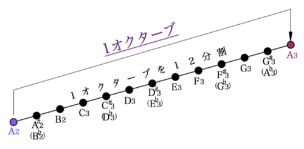
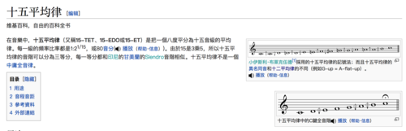
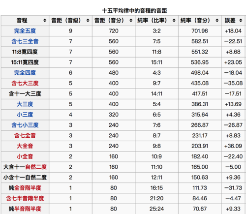

十二平均律之外的平均律¶
2016-07-03
众所周知，12平均律(12 Equal temperament)是音乐理论基石一样的存在无论是古典音乐，爵士，摇滚，电子无一可以摆脱其影响。
这是一张标准啊的12平均图，220Hz的A3到440Hz的A4的12分割。
然后我今天发现了个东西叫做微分音音乐，找到了一个十分毁我三观的东西,除了这个12平均律和中国古代用宫商角徵羽（PS：任何用12平均律的现代pop框架+民族乐器请别好意思叫自己古风音乐屑屑）的以外，还有他妈的
可以，这很乐理。
除了这个还有
- 十七平均律
- 十九平均律
- 二十二平均律
- 三十一平均律
- 三十四平均律
- 四十一平均律
- 五十三平均律
- 七十二平均律
我估计后面的平均律我的狗耳也听不出来了。
这些平均律就打破了传统音乐的理论极限（就是数学意义上的）
It’s fucking insane.